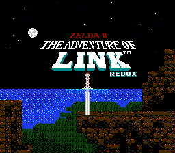

- Original game
- Nintendo
- SNES port
- Infidelity
- Original NES Redux
- ShadowOne333 and contributors
- SNES Redux adaptation & patch builder
- pxpxpxp

The Adventure of Link · SNES
Redux Patch Builder
Choose your unpatched Revision G ROM to build your own version of Zelda II. Your game file stays on your device.
No file selected
Which ROM works?
Use Infidelity’s Zelda II SNES port, Revision G. The internal title is ZELDA_II_SNES_REV-G!!. The ROM contains 4,194,304 bytes of game data with CRC32 E7339DA0. A 512-byte copier header is also supported.